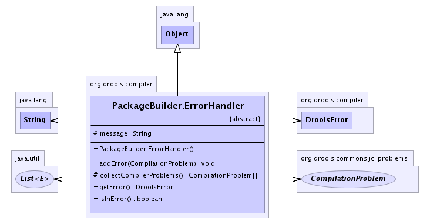

org.drools.compiler
Class PackageBuilder.ErrorHandler
java.lang.Object
 org.drools.compiler.PackageBuilder.ErrorHandler
org.drools.compiler.PackageBuilder.ErrorHandler
- Direct Known Subclasses:
- PackageBuilder.FunctionErrorHandler, PackageBuilder.RuleErrorHandler
- Enclosing class:
- PackageBuilder
public abstract static class PackageBuilder.ErrorHandler
- extends java.lang.Object
This is the super of the error handlers. Each error handler knows how to
report a compile error of its type, should it happen. This is needed, as
the compiling is done as one hit at the end, and we need to be able to
work out what rule/ast element caused the error.
An error handler it created for each class task that is queued to be
compiled. This doesn't mean an error has occurred, it just means it *may*
occur in the future and we need to be able to map it back to the AST
element that originally spawned the code to be compiled.
-
- 
|
Field Summary |
protected java.lang.String |
message
|
|
Method Summary |
void |
addError(org.drools.commons.jci.problems.CompilationProblem err)
|
protected org.drools.commons.jci.problems.CompilationProblem[] |
collectCompilerProblems()
We must use an error of JCI problem objects. |
abstract DroolsError |
getError()
|
boolean |
isInError()
This needes to be checked if there is infact an error |
| Methods inherited from class java.lang.Object |
clone, equals, finalize, getClass, hashCode, notify, notifyAll, toString, wait, wait, wait |
message
protected java.lang.String message
PackageBuilder.ErrorHandler
public PackageBuilder.ErrorHandler()
isInError
public boolean isInError()
- This needes to be checked if there is infact an error
addError
public void addError(org.drools.commons.jci.problems.CompilationProblem err)
getError
public abstract DroolsError getError()
- Returns:
- A DroolsError object populated as appropriate, should the
unthinkable happen and this need to be reported.
collectCompilerProblems
protected org.drools.commons.jci.problems.CompilationProblem[] collectCompilerProblems()
- We must use an error of JCI problem objects. If there are no
problems, null is returned. These errors are placed in the
DroolsError instances. Its not 1 to 1 with reported errors.